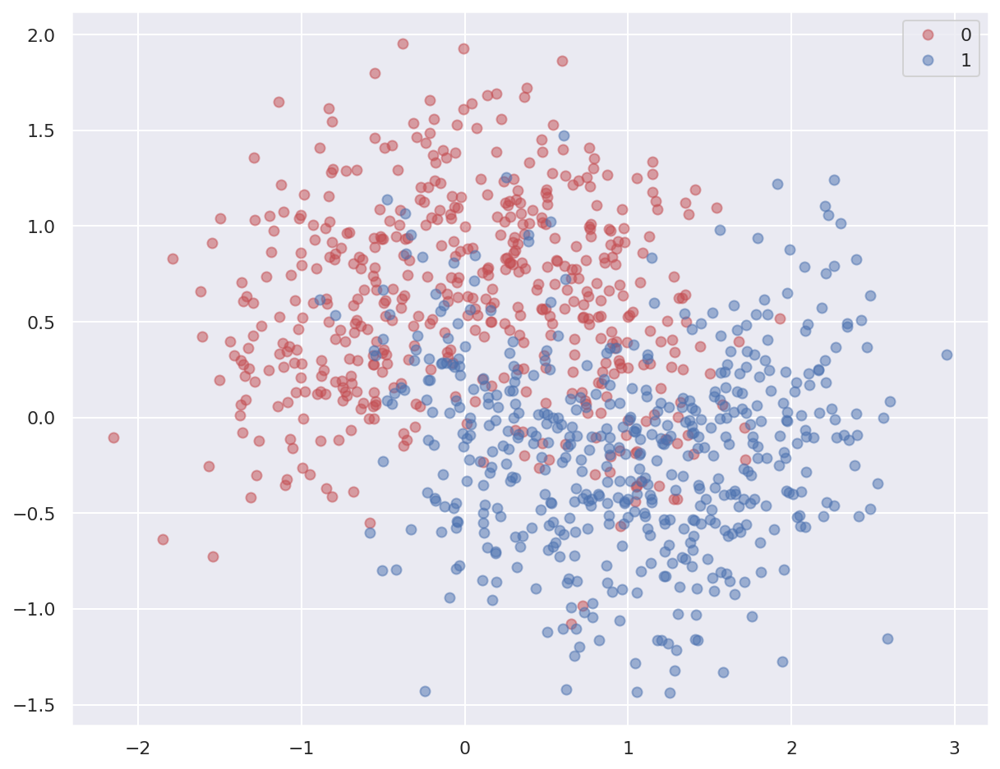
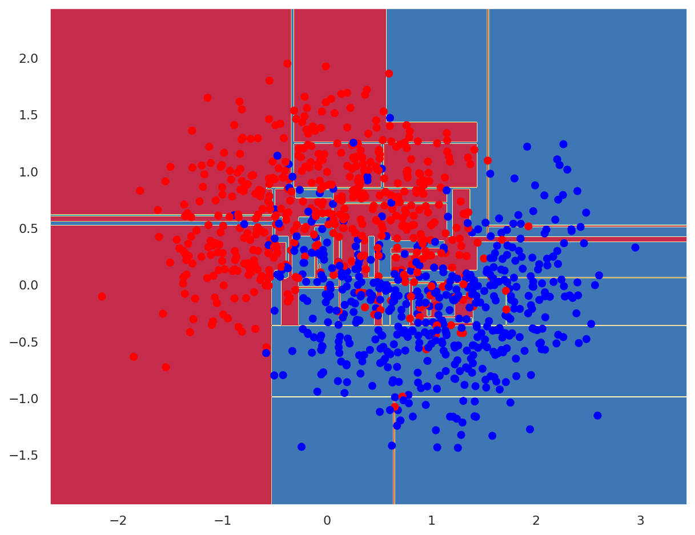
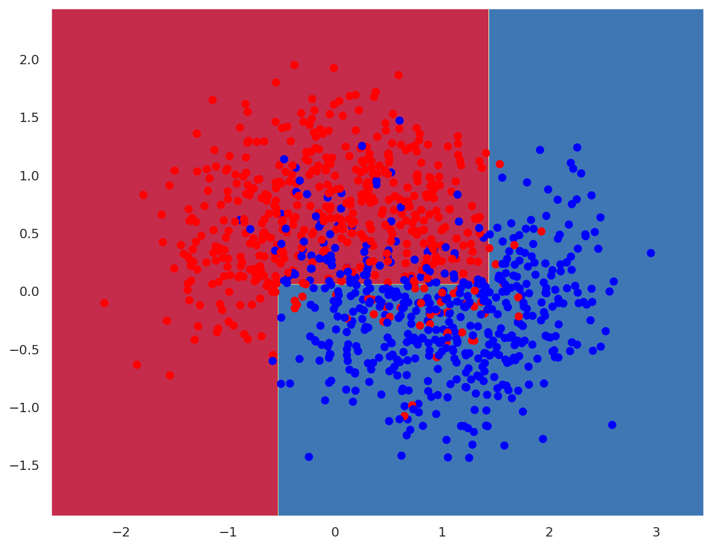

This is a self-correcting activity generated by nbgrader. Fill in any place that says
YOUR CODE HEREorYOUR ANSWER HERE. Run subsequent cells to check your code.
Classify planar data¶
In this activity, you’ll search for the best hyperparameters for a Decision Tree classifier on a planar dataset.
Environment setup¶
# Import base packages
import numpy as np
import matplotlib.pyplot as plt
from matplotlib.colors import ListedColormap
import seaborn as sns
import graphviz
# Setup plots
%matplotlib inline
plt.rcParams['figure.figsize'] = 10, 8
%config InlineBackend.figure_format = 'retina'
sns.set()
# Import ML packages
import sklearn
print(f"scikit-learn version: {sklearn.__version__}")
from sklearn.datasets import make_moons
from sklearn.model_selection import train_test_split
from sklearn.model_selection import GridSearchCV
from sklearn.tree import DecisionTreeClassifier, plot_tree, export_graphviz
scikit-learn version: 0.23.2
# Utilify functions
def plot_planar_data(X, y):
"""Plot some 2D data"""
plt.figure()
plt.plot(X[y == 0, 0], X[y == 0, 1], "or", alpha=0.5, label=0)
plt.plot(X[y == 1, 0], X[y == 1, 1], "ob", alpha=0.5, label=1)
plt.legend()
def plot_decision_boundary(pred_func, X, y, figure=None):
"""Plot a decision boundary"""
if figure is None: # If no figure is given, create a new one
plt.figure()
# Set min and max values and give it some padding
x_min, x_max = X[:, 0].min() - 0.5, X[:, 0].max() + 0.5
y_min, y_max = X[:, 1].min() - 0.5, X[:, 1].max() + 0.5
h = 0.01
# Generate a grid of points with distance h between them
xx, yy = np.meshgrid(np.arange(x_min, x_max, h), np.arange(y_min, y_max, h))
# Predict the function value for the whole grid
Z = pred_func(np.c_[xx.ravel(), yy.ravel()])
Z = Z.reshape(xx.shape)
# Plot the contour and training examples
plt.contourf(xx, yy, Z, cmap=plt.cm.Spectral)
cm_bright = ListedColormap(["#FF0000", "#0000FF"])
plt.scatter(X[:, 0], X[:, 1], c=y, cmap=cm_bright)
def export_decision_tree(tree):
"""Export a DT to graphviz format"""
# If using Jupyter locally, install graphviz with this command: conda install python-graphviz
dot_data = export_graphviz(
tree, out_file=None, filled=True, rounded=True, special_characters=True,
)
return dot_data
Step 1: Preparing the data¶
# Generate moon-shaped, noisy data
x, y = make_moons(n_samples=1000, noise=0.4)
plot_planar_data(x, y)

Step 3: Training a classifier¶
Question¶¶
Split data and labels into the x_train, x_test, y_train and y_test variables using a 25% ratio.
# YOUR CODE HERE
x_train, x_test, y_train, y_test = train_test_split(x, y, test_size=.25)
print(f'x_train: {x_train.shape}. y_train: {y_train.shape}')
print(f'x_test: {x_test.shape}. y_test: {y_test.shape}')
assert x_train.shape == (750, 2)
assert y_train.shape == (750,)
assert x_test.shape == (250, 2)
assert y_test.shape == (250,)
x_train: (750, 2). y_train: (750,)
x_test: (250, 2). y_test: (250,)
Question¶
Create a DecisionTreeClassifier instance and store it into the dt_model variable. Fit this model on the training data.
# YOUR CODE HERE
dt_model = DecisionTreeClassifier()
dt_model.fit(x_train, y_train)
DecisionTreeClassifier()
# Compute accuracy on training and test sets
train_acc = dt_model.score(x_train, y_train)
test_acc = dt_model.score(x_test, y_test)
print(f"Training accuracy: {train_acc * 100:.2f}%")
print(f"Test accuracy: {test_acc * 100:.2f}%")
assert train_acc > 0.95
assert test_acc > 0.74
Training accuracy: 100.00%
Test accuracy: 82.00%
# Plot the DT
dot_data = export_decision_tree(dt_model)
graphviz.Source(dot_data)
---------------------------------------------------------------------------
FileNotFoundError Traceback (most recent call last)
/usr/local/lib/python3.8/dist-packages/graphviz/backend.py in run(cmd, input, capture_output, check, encoding, quiet, **kwargs)
163 try:
--> 164 proc = subprocess.Popen(cmd, startupinfo=get_startupinfo(), **kwargs)
165 except OSError as e:
/usr/lib/python3.8/subprocess.py in __init__(self, args, bufsize, executable, stdin, stdout, stderr, preexec_fn, close_fds, shell, cwd, env, universal_newlines, startupinfo, creationflags, restore_signals, start_new_session, pass_fds, encoding, errors, text)
853
--> 854 self._execute_child(args, executable, preexec_fn, close_fds,
855 pass_fds, cwd, env,
/usr/lib/python3.8/subprocess.py in _execute_child(self, args, executable, preexec_fn, close_fds, pass_fds, cwd, env, startupinfo, creationflags, shell, p2cread, p2cwrite, c2pread, c2pwrite, errread, errwrite, restore_signals, start_new_session)
1701 err_msg = os.strerror(errno_num)
-> 1702 raise child_exception_type(errno_num, err_msg, err_filename)
1703 raise child_exception_type(err_msg)
FileNotFoundError: [Errno 2] No such file or directory: 'dot'
During handling of the above exception, another exception occurred:
ExecutableNotFound Traceback (most recent call last)
/usr/local/lib/python3.8/dist-packages/IPython/core/formatters.py in __call__(self, obj)
343 method = get_real_method(obj, self.print_method)
344 if method is not None:
--> 345 return method()
346 return None
347 else:
/usr/local/lib/python3.8/dist-packages/graphviz/files.py in _repr_svg_(self)
111
112 def _repr_svg_(self):
--> 113 return self.pipe(format='svg').decode(self._encoding)
114
115 def pipe(self, format=None, renderer=None, formatter=None, quiet=False):
/usr/local/lib/python3.8/dist-packages/graphviz/files.py in pipe(self, format, renderer, formatter, quiet)
134 data = text_type(self.source).encode(self._encoding)
135
--> 136 out = backend.pipe(self._engine, format, data,
137 renderer=renderer, formatter=formatter,
138 quiet=quiet)
/usr/local/lib/python3.8/dist-packages/graphviz/backend.py in pipe(engine, format, data, renderer, formatter, quiet)
242 """
243 cmd, _ = command(engine, format, None, renderer, formatter)
--> 244 out, _ = run(cmd, input=data, capture_output=True, check=True, quiet=quiet)
245 return out
246
/usr/local/lib/python3.8/dist-packages/graphviz/backend.py in run(cmd, input, capture_output, check, encoding, quiet, **kwargs)
165 except OSError as e:
166 if e.errno == errno.ENOENT:
--> 167 raise ExecutableNotFound(cmd)
168 else:
169 raise
ExecutableNotFound: failed to execute ['dot', '-Tsvg'], make sure the Graphviz executables are on your systems' PATH
# Plot the decision boundary
plot_decision_boundary(lambda x: dt_model.predict(x), x, y)

Step 4: Tuning the classifier¶
Question¶
Search for the best values of max_leaf_nodes and min_samples_split through a GridSearchCV instance, stored in the grid_search_cv variable.
The final test accuracy should be above 84%.
# YOUR CODE HERE
params = {"max_leaf_nodes": list(range(1, 50)), "min_samples_split": [1, 2, 3, 4]}
grid_search_cv = GridSearchCV(
dt_model, params, verbose=1, cv=3, scoring="accuracy"
)
# Search for the best parameters with the specified classifier on training data
grid_search_cv.fit(x_train, y_train)
# Print the best combination of hyperparameters found
print(grid_search_cv.best_params_)
Fitting 3 folds for each of 196 candidates, totalling 588 fits
[Parallel(n_jobs=1)]: Using backend SequentialBackend with 1 concurrent workers.
{'max_leaf_nodes': 4, 'min_samples_split': 2}
[Parallel(n_jobs=1)]: Done 588 out of 588 | elapsed: 1.0s finished
# Compute accuracy on training and test sets
train_acc = grid_search_cv.score(x_train, y_train)
test_acc = grid_search_cv.score(x_test, y_test)
print(f"Training accuracy: {train_acc * 100:.2f}%")
print(f"Test accuracy: {test_acc * 100:.2f}%")
assert train_acc > 0.84
assert test_acc > 0.84
Training accuracy: 85.60%
Test accuracy: 86.00%
# Plot the best classifier
dot_data = export_decision_tree(grid_search_cv.best_estimator_)
graphviz.Source(dot_data)
---------------------------------------------------------------------------
FileNotFoundError Traceback (most recent call last)
/usr/local/lib/python3.8/dist-packages/graphviz/backend.py in run(cmd, input, capture_output, check, encoding, quiet, **kwargs)
163 try:
--> 164 proc = subprocess.Popen(cmd, startupinfo=get_startupinfo(), **kwargs)
165 except OSError as e:
/usr/lib/python3.8/subprocess.py in __init__(self, args, bufsize, executable, stdin, stdout, stderr, preexec_fn, close_fds, shell, cwd, env, universal_newlines, startupinfo, creationflags, restore_signals, start_new_session, pass_fds, encoding, errors, text)
853
--> 854 self._execute_child(args, executable, preexec_fn, close_fds,
855 pass_fds, cwd, env,
/usr/lib/python3.8/subprocess.py in _execute_child(self, args, executable, preexec_fn, close_fds, pass_fds, cwd, env, startupinfo, creationflags, shell, p2cread, p2cwrite, c2pread, c2pwrite, errread, errwrite, restore_signals, start_new_session)
1701 err_msg = os.strerror(errno_num)
-> 1702 raise child_exception_type(errno_num, err_msg, err_filename)
1703 raise child_exception_type(err_msg)
FileNotFoundError: [Errno 2] No such file or directory: 'dot'
During handling of the above exception, another exception occurred:
ExecutableNotFound Traceback (most recent call last)
/usr/local/lib/python3.8/dist-packages/IPython/core/formatters.py in __call__(self, obj)
343 method = get_real_method(obj, self.print_method)
344 if method is not None:
--> 345 return method()
346 return None
347 else:
/usr/local/lib/python3.8/dist-packages/graphviz/files.py in _repr_svg_(self)
111
112 def _repr_svg_(self):
--> 113 return self.pipe(format='svg').decode(self._encoding)
114
115 def pipe(self, format=None, renderer=None, formatter=None, quiet=False):
/usr/local/lib/python3.8/dist-packages/graphviz/files.py in pipe(self, format, renderer, formatter, quiet)
134 data = text_type(self.source).encode(self._encoding)
135
--> 136 out = backend.pipe(self._engine, format, data,
137 renderer=renderer, formatter=formatter,
138 quiet=quiet)
/usr/local/lib/python3.8/dist-packages/graphviz/backend.py in pipe(engine, format, data, renderer, formatter, quiet)
242 """
243 cmd, _ = command(engine, format, None, renderer, formatter)
--> 244 out, _ = run(cmd, input=data, capture_output=True, check=True, quiet=quiet)
245 return out
246
/usr/local/lib/python3.8/dist-packages/graphviz/backend.py in run(cmd, input, capture_output, check, encoding, quiet, **kwargs)
165 except OSError as e:
166 if e.errno == errno.ENOENT:
--> 167 raise ExecutableNotFound(cmd)
168 else:
169 raise
ExecutableNotFound: failed to execute ['dot', '-Tsvg'], make sure the Graphviz executables are on your systems' PATH
# Plot the decision boundary
plot_decision_boundary(lambda x: grid_search_cv.predict(x), x, y)

TODO¶
Try other metrics for grid search (f1, ROC AUC)